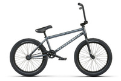
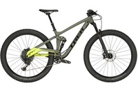
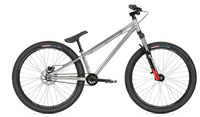

BMX Bike
 Popularized during the 80's, BMX bikes are designed for street, skatepark, and smooth dirt jump riding. The small build is optimized for airtime, tricks, and durability when things go south. BMX bikes are typically constructed of steel for durability at the expense of weight. BMX bikes throw out the shifter and come with single chainrings in the front and the rear to easier set up for jumps and tricks. BMX bikes also commonly ditch brakes for less intrusion and complete rotation of the front end.
{kind=link}
Mountain Bike
 Mountain bikes are designed to endure off-road riding where terrain becomes chunky, muddy, and all-around demanding. While these bikes are constructed with durability in mind, they typically don't skimp out on weight reduction depending on your riding discipline. Mountain bikers range from racers who favor stiff and light bikes, downhill riders who favor suspension and grip, and everything in between. Mountain bikes are equipped with hydraulic disc brakes and a wide range of gears to keep the rider in control. Suspension and wide, grippy tires keep riding smooth over rocks and roots.
{kind=link}
Dirt Jump Bike
 Dirt jumpers are a pretty even mix between BMX and mountain bikes, best suited for groomed dirt jumps and pump tracks. Dirt jumpers are also a great way to introduce those used to the mountain bike's build to street and skatepark riding where they also excel. Dirt jumpers take frame and drivetrain design from BMXs and meld them with suspension and disc braking from mountain bikes. Dirt jumpers typically physically size up somewhere between a BMX and mountain bike, bridging the gap between small and rigid BMXs and cushy and stable mountain bikes. Retrieved from http://www.history.com/topics/brooklyn-bridge on September 8, 2017
{kind=link}